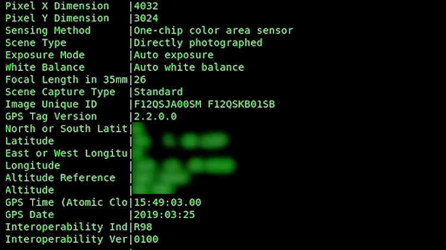

Les metadonnées EXIF
Les métadonnées EXIF (Exchangeable Image File Format) sont des informations intégrées automatiquement dans un fichier image au moment de sa création, généralement par un appareil photo ou un smartphone. Elles contiennent divers détails techniques et contextuels, comme la date et l’heure de la prise de vue, le modèle de l’appareil utilisé, les réglages (ISO, ouverture, vitesse d’obturation), ainsi que parfois la localisation GPS. Ces données sont utiles pour organiser, analyser ou authentifier une photo, mais elles peuvent aussi poser des risques pour la vie privée si elles révèlent des informations sensibles comme l’emplacement exact où l’image a été prise.
Informations contenues dans les métadonnées EXIF
- Date et heure de la prise de vue
- Coordonnées GPS (latitude, longitude, altitude)
- Marque et modèle de l’appareil
- Numéro de série de l’appareil (parfois)
- Paramètres de prise de vue :
- Ouverture (f/)
- Vitesse d’obturation
- Sensibilité ISO
- Distance focale
- Mode de prise de vue
- Informations sur le flash (activé/désactivé)
- Balance des blancs
- Résolution et dimensions de l’image
- Format et type de fichier
- Orientation de l’image
- Logiciel utilisé pour créer ou modifier l’image
- Auteur ou copyright (si renseigné)

Comment lire les metadonnées EXIF ?
Il existe plusieurs méthodes pour lire les métadonnées EXIF d’une image :
Sur ordinateur
- Windows : clic droit sur l’image → Propriétés → Détails
- Mac : clic droit → Lire les informations → section EXIF
Sur smartphone
- Android : ouvrir l’image → Détails
- iPhone : ouvrir l’image → glisser vers le haut ou icône ℹ️
En ligne
Utilise un site web pour téléverser l’image et afficher ses métadonnées.
Avec des logiciels
- Logiciels de photo (Lightroom, etc.)
- Outils spécialisés comme ExifTool
Metadonnées EXIF d'une photo numérique
| Catégorie EXIF | Champ typique | Description / Explication | Impact ou Utilité |
|---|---|---|---|
| Appareil | Make, Model | Marque et modèle de l’appareil | Savoir quel appareil a pris la photo |
| Capture / Photo | FNumber, ShutterSpeed, ISO, FocalLength | Réglages de l’exposition et de l’objectif | Comprendre la qualité et l’aspect artistique |
| Logiciel / Retouche | Software, Processing | Logiciel utilisé pour éditer la photo | Suivi des retouches ou historique de l’image |
| Date / Temps | DateTimeOriginal, DateTimeDigitized | Quand la photo a été prise ou modifiée | Organisation chronologique des photos |
| Orientation | Orientation | Position de l’image (portrait / paysage) | Affichage correct sur les appareils |
| Localisation | GPS Latitude, GPS Longitude | Coordonnées GPS si activé | Localiser la photo sur une carte |
| Sécurité / Confidentialité | ExifVersion, MakerNote | Informations techniques et notes constructeurs | Peut révéler des informations sensibles |
Les EXIF peuvent révéler des informations très précises, comme la vitesse exacte de l’obturateur ou le type de carte mémoire utilisée. Des enquêteurs ont même réussi à retrouver l’auteur d’une photo simplement grâce aux données EXIF cachées dans l’image !
Vidéo explicative
Voici ci-dessous une vidéo nous renseignant sur les metadonnées EXIF